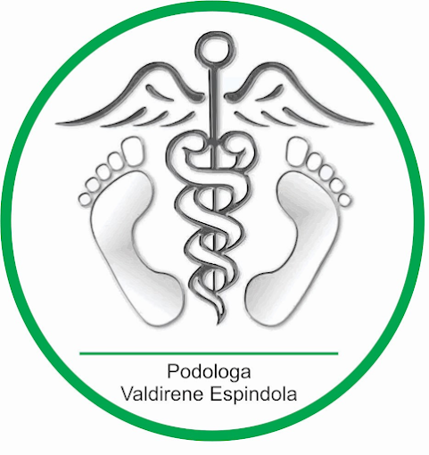

✧
Procedimentos em Unhas
Manutenção de corte, unha encravada, órtese e reconstrução de unha.

Atendimento podológico cuidadoso e acolhedor. Agende seu horário de forma rápida, direto pelo WhatsApp.
Mais de 10 anos de experiência
Graduação em Podologia · Fisiomar, Itajaí–SC
Olá! Sou Valdirene Espindola, profissional da área de Podologia, com mais de 10 anos de experiência dedicados ao cuidado e à saúde dos pés.
Possuo formação técnica e graduação em Podologia, realizadas na Fisiomar, em Itajaí–SC. Ao longo da minha trajetória, também participei de congressos e atividades de atualização profissional, buscando aprimorar meus conhecimentos.
Acredito que cuidar dos pés é também cuidar da saúde, do conforto e da qualidade de vida. Por isso, valorizo um atendimento humanizado e individualizado.
Meu compromisso é oferecer um atendimento responsável, atencioso e acolhedor, proporcionando confiança e cuidado em cada consulta.
Será um prazer receber você e cuidar da saúde dos seus pés!
Podologia especializada: cuidado, saúde e bem-estar para seus pés.
Manutenção de corte, unha encravada, órtese e reconstrução de unha.
Limpeza para tratamento de fungos e tratamento de verruga.
Retirada de calosidades, limpeza completa e calos internos ou interdigitais.
Limpeza preventiva das lâminas e avaliação inicial.
Segunda a sexta 14h às 20h
Agende pelo WhatsApp. A duração varia conforme o procedimento.
Chame no WhatsApp e escolha o melhor horário para você.
Chamar no WhatsApp